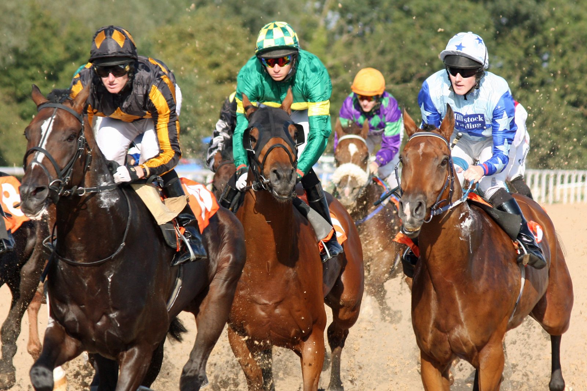

Agate sale del atasco en la recta y se gana su plaza en la Breeders' Cup Juvenile Turf
El castrado de Dede McGehee, montado por Tyler Gaffalione, se impuso el domingo en el Castle & Key Bourbon Stakes (GII) de Keeneland y se clasificó directamente para la Breeders' Cup Juvenile Turf.

La carrera se decidió en mitad de la recta, en un pelotón que ocupaba toda la pista. Agate venía pegado a los palos y no encontraba hueco. Gaffalione lo abrió tres calles, volvió a cerrarlo para meterse entre dos rivales y, en cuanto tuvo espacio, el potro arrancó hacia la cabeza.
Hasta entonces mandaba Trim Castle, que llegó a sacar siete cuerpos al grupo con parciales de 22,39 s y 46,27 s en la media milla. Esa ventaja se fue deshaciendo al encarar la recta. Agate, que salió a 7-2 y corrió muy retrasado, cruzó la meta con un cuerpo y tres cuartos sobre Bold Leadership, que remató con fuerza para Todd Pletcher. Tercero fue Real Goodbar, de Kenneth McPeek, a tres cuartos. El crono para la milla y un dieciseisavo en hierba, con el piso firme, se paró en 1:42.64.
Es la primera victoria con black type y la primera en una prueba graduada para este hijo de Karakontie (Jpn) y More Than Gracious, por More Than Ready. Lo prepara Kelsey Danner. Su propietaria, Dede McGehee, es también su criadora.
El triunfo le reporta 232.500 dólares de una bolsa de 398.750 y deja su historial en cuatro salidas, dos victorias y un tercer puesto, con 363.775 dólares ganados. Se estrenó como ganador el 5 de julio en Ellis Park, en la milla sobre hierba, por cuatro cuerpos y medio y tirando desde delante. El 9 de septiembre fue tercero en el Kentucky Downs Juvenile Mile tras un recorrido con problemas.
"Este caballo ha sido muy dispuesto", declaró Gaffalione tras la carrera. "Atendió a todas mis indicaciones, respondió cuando lo necesité y terminó de maravilla. Estoy muy orgulloso de su esfuerzo".
Su madre, hermana de la ganadora de stakes House of Grace, suma con él su segundo ganador y su primer producto con black type.
— Redacción de Galope al Día